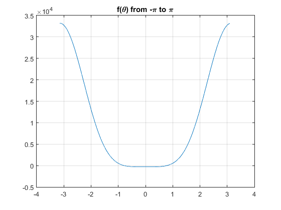
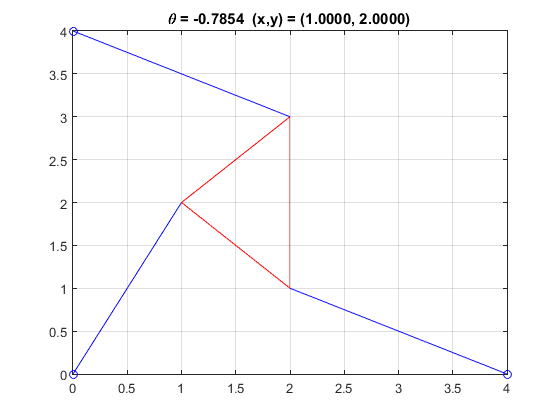
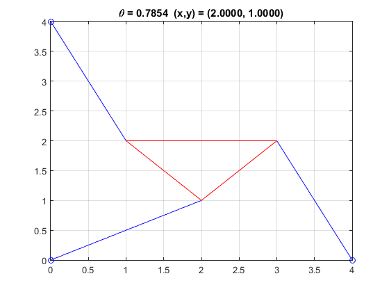

For Project 1, we chose to solve the Kinematics of the Stewart Platform. From the project page, we were asked to complete the following:
"Solve the problems presented in Reality Check 1 on page 67-69 of the text. Carry out Parts 1 - 6. Exception: in Part 5, use any value of \(p_2\) except 7. But be sure there are six poses -- you'll have to stay fairly close to 7."
The Stewart platform is a robot with six struts. Each strut can change its length (giving the robot six degrees-of-freedom). The overall goal of this project is to write a MATLAB function to calculate \((x, y)\) and \(\theta\) given some \(p_1\), \(p_2\), and \(p_3\) for the following figure.
For part 1, we were tasked with writing a MATLAB function for \(f(\theta)\) using the parameters given. Once we accomplished this, we had a to find a root. We knew that a root would exist within \((-\frac{\pi}{4},\frac{\pi}{4})\). This yielded the root \(-4.5475 \times 10^{-13}\) which was close to 0.
After finding this root, we needed to graph our function on \(-\pi\) to \(\pi\) to verify that we found a 0.

Solving the forward kinematics of the Stewart Platform yields different poses based on our initial parameters. There should be a pose for every solution of \(f(\theta)\). For this excercise and the following excercises, we wrote a MATLAB function, planarfkp, to plot the poses.

